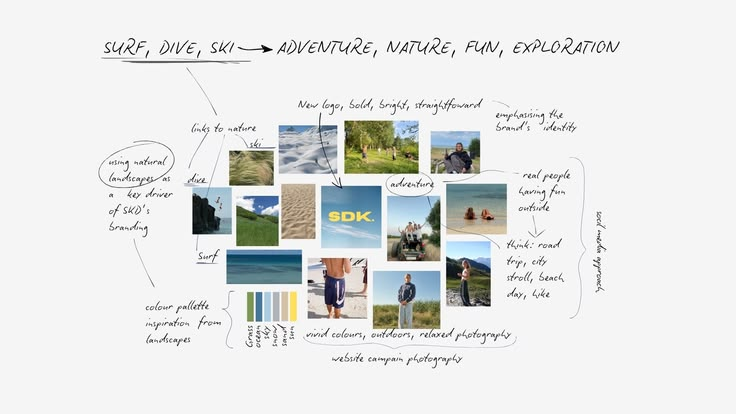

Landscape
Local time
能保留不同地区的晨昏变化，但 AI 的存在感较弱。
同一场 AI Leadership Forum 在四个地区接力发生。时区、光线与城市语境不同，视觉系统要保留本地感，也要让参与者感到自己正在参与同一场全球接力。

Design problem
而不是为四座城市做四套海报。
统一让 AI 成为所有现场都能识别的共同主角。
差异保留每个地区独有的光线、城市和议题。
延展从主舞台延展至邀请、社媒和区域传播物料。
Four regions, one relay
接力的不是同一张静态海报，而是一套能随着地区、议题与现场持续变化的全球视觉系统。
能保留不同地区的晨昏变化，但 AI 的存在感较弱。

能表达城市差异，但容易变成单一地点的宣传画面。

让 AI 成为四地共用的未来语言，也保留每个现场的空间语境。
2100s 把 AI 置于主角位置，并将这一共同语言放进四地的现场屏幕与传播环境。形成一套能随着地区、议题与现场持续变化的全球视觉系统。


人物资产为不同地区提供了可代入的入口，让抽象的 AI 议题落到可识别、可传播的活动体验。
邀请函、社交媒体和 Save the Date 沿用同一套视觉语法，让每个触点持续指向同一次全球接力。